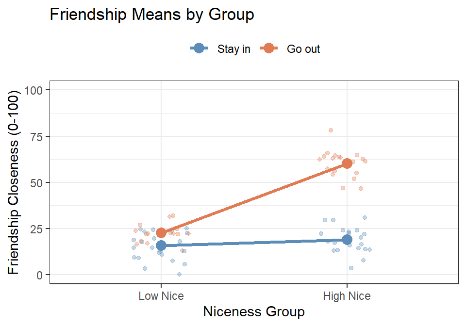
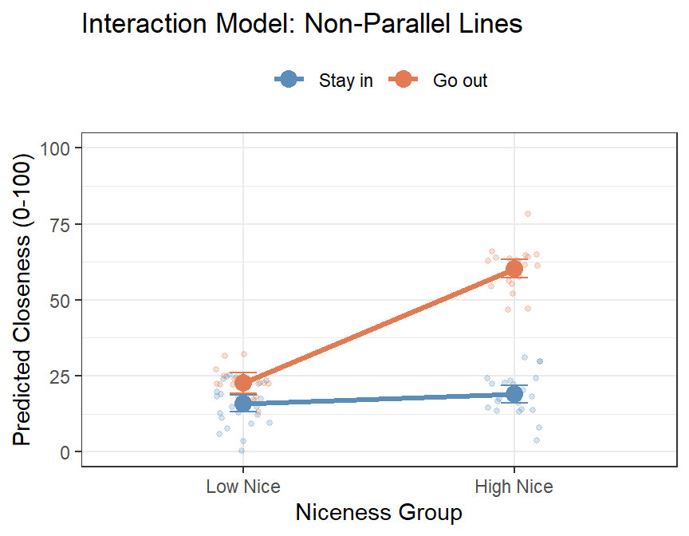
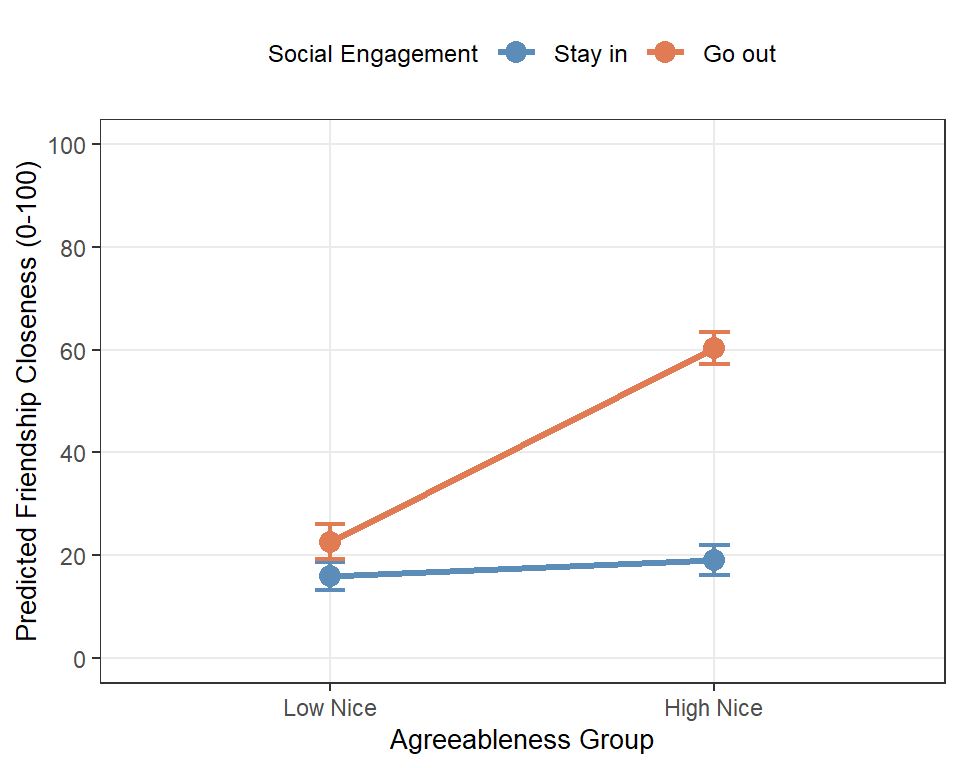

![Two side-by-side line graphs, each with Low Nice and High Nice on the x axis and predicted closeness from 0 to 75 on the y axis, and two connected points per Going Out group. In the left panel, Hypothesis A No Interaction, the Stay in line rises from 15 to 20 and the Go out line rises from 20 to 25, so the two lines are parallel and the vertical gap stays at 5. In the right panel, Hypothesis B Interaction Present, both lines start at 15 for Low Nice, but the Stay in line rises only to 16 while the Go out line jumps to 61, opening a large gap at the right.](Ch_17_Categorical_Interaction_files/figure-html/hypothesis-plots-1.png)
17 Categorical-by-Categorical Interactions: The 2-by-2 Design
17.1 The Design Psychology Cannot Stop Running
Open a psychology journal to a random page. There is a very good chance the analysis you land on is a 2 × 2: two variables, two levels each, four groups, and one figure with two lines that either are or are not parallel. Drug versus placebo crossed with young versus old. Threat crossed with reassurance. Word lists crossed with sleep. It is the most-run design in the field, and if you go to graduate school in this discipline you will run one within the year.
So let us run one. Same friendship study as the prior chapter, same hypothesis, same 200 students.
There is one obstacle. A 2 × 2 needs two categorical variables, and Being Nice is not categorical. It is a perfectly good continuous rating from 0 to 10. So we are going to keep the least agreeable students, keep the most agreeable students, throw the 119 people in the middle of the scale directly into the bin, and call what survives Low Nice and High Nice.
Yes, that is roughly as bad as it sounds. We will come back to exactly how bad, and to why this book is allowed to do it and you are not, at the moment we actually do it.
17.2 Where We Are and Where We Are Going
In the prior chapter you learned how to detect, estimate, and interpret an interaction between a continuous predictor and a categorical one. In the friendship study, Being Nice (0–10 scale) was continuous and Going Out (Stay in vs. Go out) was categorical. The interaction told you that the slope of Being Nice on friendship closeness was different for students who went out compared to those who stayed in.
That kind of interaction is very common in psychology research. But so is a second kind: interactions where both predictors are categorical. This is the foundation of the two-way factorial ANOVA, and the 2 × 2 is its simplest and most common version.
This chapter assumes you have already read the prior chapter material. You know what an interaction is, you know how to interpret the interaction model equation, and you know how to use anova() to compare a main effects model to an interaction model. What is new here is what changes, and what stays the same, when both predictors are categorical.
17.2.1 What Changes from prior chapter
The biggest conceptual change is this: there is no continuous variable to center. In the prior chapter centering was necessary because the intercept needed a meaningful zero point on the continuous scale. When both predictors are categorical, every predictor already takes on a small set of discrete values, and the “zero point” is simply the reference category of each variable, a specific cell in the design, not an abstract mean.
Everything else follows from that:
- No centering is needed. Both variables just need dummy coding.
- The interaction coefficient is no longer a “difference in slopes.” There are no slopes here. Instead, \(B_3\) is the difference in group differences, sometimes called the “difference of differences.” We will unpack this carefully.
- The follow-up to the interaction is simple effects analysis: testing, within each level of one variable, whether the levels of the other variable differ significantly. We use
pairs()from theemmeanspackage instead ofemtrends(). - Effect sizes for pairwise comparisons are expressed as Cohen’s d, not unstandardized slopes.
What stays the same: the interaction is still about “it depends.” The visual signature is still non-parallel lines (or unequal gaps in a bar chart). The model comparison is still done with anova() and \(\Delta R^2\). The APA write-up still follows the same structure.
17.2.2 What the 2×2 Looks Like as a Table
Before we touch any data, it helps to lay out the full design as a 2 × 2 table. Each cell represents a unique combination of the two categorical predictors, and we expect a separate (estimated) mean outcome in each cell.
| Stay in | Go out | |
|---|---|---|
| Low Nice | \(\mu_{11}\): Low Nice × Stay in | \(\mu_{12}\): Low Nice × Go out |
| High Nice | \(\mu_{21}\): High Nice × Stay in | \(\mu_{22}\): High Nice × Go out |
The interaction question is: is the difference between High Nice and Low Nice the same in both columns (Going Out groups)? Or equivalently: is the difference between Go out and Stay in the same in both rows (Niceness groups)?
Both questions ask the same thing. The answer is the interaction.
NoteSame Two IVs, Same One DV, Still Nobody Measured Twice
A quick inventory, since the parts have been renamed but not replaced.
The DV (the outcome) is still friendship closeness, 0 to 100. The IVs (the predictors) are still two: Niceness Group and Going Out. Two IVs is what makes an interaction possible; that has not changed. What changed is only that both IVs are now categorical.
Both are still between subjects: one row per student, one cell per student, nobody measured twice. A 2 × 2 in which the same people turn up in more than one cell is a repeated-measures design, which is a different model and a later chapter.
And it is still true that regression does not care whether an IV was randomly assigned or merely observed. Neither of ours was assigned. We did not randomly allocate students to be agreeable, and we did not send half of them out to parties. The 2 × 2 table you are about to see will look exactly like a table from a real experiment, the F values are computed exactly the same way, and none of that buys you a causal claim. The design decides what you may conclude. The arithmetic never does.
17.3 The Core Concept: The “Difference of Differences”
17.3.1 What It Means When Both Predictors Are Categorical
In the prior chapter, the interaction coefficient \(B_3\) told you how much steeper the slope of Being Nice was for the “Go out” group compared to the “Stay in” group. Slopes are a continuous concept: the rate at which friendship closeness increases as niceness increases by one unit.
When Being Nice is categorical (Low vs. High), there are no slopes. Instead, there is a gap: the difference in predicted friendship closeness between High Nice and Low Nice students. The interaction now asks whether that gap is the same size in both Going Out groups.
Here is the idea in formula form. Define:
- Effect of Niceness for Stay-in students = \(\mu_{21} - \mu_{11}\) (High Nice – Low Nice, among those who stay in)
- Effect of Niceness for Go-out students = \(\mu_{22} - \mu_{12}\) (High Nice – Low Nice, among those who go out)
The interaction is the difference between these two effects:
\[B_3 = (\mu_{22} - \mu_{12}) - (\mu_{21} - \mu_{11})\]
This is the “difference of differences.” If there is no interaction, the effect of Niceness is the same size in both Going Out groups, and \(B_3 = 0\). If there is an interaction, the effect of Niceness is larger in one group than the other, and \(B_3 \neq 0\).
Equivalently (and this is worth pausing on), you can write it the other way:
\[B_3 = (\mu_{22} - \mu_{21}) - (\mu_{12} - \mu_{11})\]
This version asks: is the effect of Going Out (Go out – Stay in) the same for High Nice and Low Nice students? The two formulations are mathematically identical and represent the same interaction. Which framing you use depends on which story you want to tell. In our study, we are primarily interested in whether the benefit of being nice depends on whether you go out, so we will usually use the first framing.
17.3.2 Visual Hypotheses: What We Expect to See
As in the prior chapter, we can sketch out our two competing possibilities before running a single model.
Notice the visualization has changed from the prior chapter. Instead of regression lines across a continuous X-axis, we now have two points connected by a line for each Going Out group. The key visual signature of an interaction is still non-parallel lines. But “non-parallel” now means the gaps between the two groups are different sizes across the niceness levels, rather than different slopes.
- In Hypothesis A, the two lines are parallel: the gap between “Go out” and “Stay in” is the same for Low Nice and High Nice students. Being nice adds a fixed amount regardless of going out.
- In Hypothesis B, the lines fan out: the gap between “Go out” and “Stay in” is tiny for Low Nice students but enormous for High Nice students. This is our interaction hypothesis: being nice only pays off substantially if you are also out there meeting people.
17.4 Before We Run the Models: Dummy Coding Both Variables
17.4.1 No Centering Required
In the prior chapter, you had to center the continuous predictor (Being Nice) before building the interaction model. Centering shifted the scale so that zero represented the average person, making the intercept interpretable.
When both predictors are categorical, there is nothing to center. Each predictor already takes on discrete values. The “zero point” for each predictor is simply its reference category, whichever group we designate as the baseline.
This is actually simpler than the prior chapter. The only setup step is making sure both variables are properly factored in R, with the reference groups ordered first.
17.4.2 Dummy Coding Both Variables
We have two categorical predictors, each with two levels:
| Variable | Levels | Reference group (coded 0) | Comparison group (coded 1) |
|---|---|---|---|
| NiceGroup | Low Nice, High Nice | Low Nice | High Nice |
| GoingOut | Stay in, Go out | Stay in | Go out |
With this coding, the four coefficients in the interaction model have the following meanings:
| Coefficient | What it represents |
|---|---|
| \(B_0\) (Intercept) | Predicted closeness for Low Nice × Stay in students, the baseline cell |
| \(B_1\) (NiceGroup: High Nice) | High Nice – Low Nice among Stay-in students (simple effect of niceness for stay-in group) |
| \(B_2\) (GoingOut: Go out) | Go out – Stay in among Low Nice students (simple effect of going out for low-nice group) |
| \(B_3\) (NiceGroup × GoingOut) | The “difference of differences”: does the effect of niceness differ by going-out group? |
Notice that \(B_1\) and \(B_2\) are no longer main effects in the traditional sense: they are simple effects, each representing the effect of one variable holding the other variable at its reference level. This is the same logic as in the prior chapter, where \(B_1\) was the slope for the reference group only. Here, \(B_1\) is the niceness gap for the reference going-out group only.
17.4.3 Recovering All Four Cell Means
One of the useful features of the 2 × 2 interaction model is that you can reconstruct every cell mean directly from the coefficients. Here is the formula for each cell:
| Cell | Formula | Plain meaning |
|---|---|---|
| Low Nice × Stay in | \(B_0\) | Baseline |
| High Nice × Stay in | \(B_0 + B_1\) | Baseline + niceness effect (Stay in) |
| Low Nice × Go out | \(B_0 + B_2\) | Baseline + going-out effect (Low Nice) |
| High Nice × Go out | \(B_0 + B_1 + B_2 + B_3\) | All four terms |
The final cell is the most important: for High Nice students who also go out, the prediction is the baseline plus the simple effect of niceness, plus the simple effect of going out, plus the interaction term. The interaction term \(B_3\) adjusts the prediction for the cell where both variables are at their non-reference level. If there is no interaction (\(B_3 = 0\)), the effects of the two variables add up independently and the model is purely additive.
17.5 The Data
We return to our 200 first-semester students. Recall that we measured friendship closeness (0–100 feelings thermometer), agreeableness (0–10), and whether they went out regularly.
For this analysis, we focus on the extremes of the niceness distribution: students who scored below 2 on the agreeableness scale (near 0 = Low Nice) and students who scored above 8 (High Nice). Everyone in the middle of the scale is dropped, which is most of the sample, and we keep only the contrast between the most and least agreeable people in it.
WarningWhy We Are Allowed to Do This, and You Are Not
I am about to butcher a perfectly good continuous variable, on purpose, in front of you. I am doing it because the 2 × 2 is how a large share of psychology structures its experiments, and you need to be able to read, run, and interpret one.
Doing this to real continuous data is a different matter. Median splits and extreme-groups designs throw away information you paid to collect, shrink your statistical power, and can manufacture effects that are not there (MacCallum et al. 2002). Never do this or I will chase you with my Nerf bat. Notice what happens below: 200 participants become 81. We are discarding well over half the study to make a picture that is easier to draw.
The rule is simple. If your variable is continuous, use the previous chapter’s model. Categorize when the variable is genuinely categorical, or when someone else already categorized it before you arrived, not because a 2 × 2 is easier to explain in a talk.
Here is the simulation, including the filter that does the damage. This is the same 200 students and the same seed as the prior chapter, so Friend.Data.Full below is identical to the dataset we used there:
library(tidyverse)
set.seed(42)
n <- 200
X <- runif(n, 0, 10)
Z <- rbinom(n, 1, 0.5)
Y <- 0.05 * X + 0 * Z + 5 * X * Z + 15 + rnorm(n, sd = 7)
Friend.Data.Full <- data.frame(BeingNice = X, GoingOut = Z, Closeness = Y)
Friend.Data.Full$GoingOut_ <- factor(Friend.Data.Full$GoingOut,
levels = c(0, 1),
labels = c("Stay in", "Go out"))
# Create niceness group for extremes
Friend.Data.Full$NiceGroup_ <- ifelse(Friend.Data.Full$BeingNice < 2, "Low Nice",
ifelse(Friend.Data.Full$BeingNice > 8, "High Nice", NA))
# Keep only extreme groups
Friend.Data <- Friend.Data.Full |>
filter(!is.na(NiceGroup_)) |>
mutate(NiceGroup_ = factor(NiceGroup_, levels = c("Low Nice", "High Nice")))
n_low_stayin <- sum(Friend.Data$NiceGroup_ == "Low Nice" & Friend.Data$GoingOut_ == "Stay in")
n_low_goout <- sum(Friend.Data$NiceGroup_ == "Low Nice" & Friend.Data$GoingOut_ == "Go out")
n_high_stayin <- sum(Friend.Data$NiceGroup_ == "High Nice" & Friend.Data$GoingOut_ == "Stay in")
n_high_goout <- sum(Friend.Data$NiceGroup_ == "High Nice" & Friend.Data$GoingOut_ == "Go out")The resulting dataset has 81 participants spread across four cells:
Friend.Data |>
group_by(NiceGroup_, GoingOut_) |>
summarise(n = n(),
M_Close = round(mean(Closeness), 2),
SD_Close = round(sd(Closeness), 2),
.groups = "drop")# A tibble: 4 x 5
NiceGroup_ GoingOut_ n M_Close SD_Close
<fct> <fct> <int> <dbl> <dbl>
1 Low Nice Stay in 25 16.0 7.27
2 Low Nice Go out 16 22.6 4.97
3 High Nice Stay in 21 19 7.05
4 High Nice Go out 19 60.3 7.32The cell counts are not equal, which is typical when you extract extremes from a continuous distribution rather than randomly assigning participants to conditions. Unequal cells are no problem for the regression estimates. (Classic ANOVA arithmetic assumes balanced cells; with unequal n the ANOVA world descends into a fight about “Types of sums of squares” that regression coefficients let you skip. If you ever meet Type III SS in the wild, that is what the fight was about, and we will see it happen later in this chapter.)
The cell means already tell an interesting story. Among Low Nice students, going out is worth something but not much: about 16 on the thermometer if they stay in, about 23 if they go out. Among High Nice students the same comparison is enormous, roughly 19 against 60. That is the difference of differences we just defined, sitting in the raw means before we have fit anything, and it matches Hypothesis B.
17.6 A First Look at the Data
Before running any models, let’s visualize the four cells directly.

The pattern is striking. The “Stay in” line (blue) is almost flat: Low Nice and High Nice students who stay in have close to the same closeness scores. The “Go out” line (orange) rises sharply: High Nice students who go out form far closer friendships than Low Nice students who go out. The two lines are clearly non-parallel, which is the visual signature of an interaction. This picture already suggests Hypothesis B.
17.7 Building the Models
17.7.1 Model 1: The Additive Model
We begin with the main effects (additive) model. This model says the two variables each have an independent effect on friendship closeness, and those effects add up without interacting.
\[\widehat{Closeness} = B_0 + B_1 \cdot NiceGroup + B_2 \cdot GoingOut + \varepsilon\]
Model.1 <- lm(Closeness ~ NiceGroup_ + GoingOut_, data = Friend.Data)
summary(Model.1)
Call:
lm(formula = Closeness ~ NiceGroup_ + GoingOut_, data = Friend.Data)
Residuals:
Min 1Q Median 3Q Max
-23.4417 -9.7999 0.2044 9.9769 27.0074
Coefficients:
Estimate Std. Error t value Pr(>|t|)
(Intercept) 9.112 1.980 4.602 1.59e-05 ***
NiceGroup_High Nice 18.025 2.465 7.314 1.98e-10 ***
GoingOut_Go out 24.173 2.487 9.718 4.40e-15 ***
---
Signif. codes: 0 '***' 0.001 '**' 0.01 '*' 0.05 '.' 0.1 ' ' 1
Residual standard error: 11.05 on 78 degrees of freedom
Multiple R-squared: 0.674, Adjusted R-squared: 0.6657
F-statistic: 80.64 on 2 and 78 DF, p-value: < 2.2e-16The additive model estimates a single effect of NiceGroup (averaged across both Going Out groups) and a single effect of GoingOut (averaged across both Niceness groups). These are conventional main effects.
Notice that the R² here (0.674) is already reasonably high, driven primarily by the Going Out main effect. But as we will see, forcing the effects to be additive is a poor fit for the actual pattern in the data.
17.7.2 Visualizing the Additive Model

The additive model forces the two lines to be parallel. The gap between “Go out” and “Stay in” is identical for Low Nice and High Nice students. But look at the raw data: the “Go out” students in the High Nice group (orange, right side) are far higher than what the parallel-line model predicts for them, and the “Stay in” students in the same group are not as high as the model suggests. The parallel assumption is clearly wrong.
17.7.3 Model 2: The Interaction Model
Now we add the interaction term:
\[\widehat{Closeness} = B_0 + B_1 \cdot NiceGroup + B_2 \cdot GoingOut + B_3 \cdot NiceGroup \times GoingOut + \varepsilon\]
Model.2 <- lm(Closeness ~ NiceGroup_ * GoingOut_, data = Friend.Data)
summary(Model.2)
Call:
lm(formula = Closeness ~ NiceGroup_ * GoingOut_, data = Friend.Data)
Residuals:
Min 1Q Median 3Q Max
-15.7001 -4.7327 -0.0055 4.3511 18.0093
Coefficients:
Estimate Std. Error t value Pr(>|t|)
(Intercept) 15.950 1.367 11.670 < 2e-16 ***
NiceGroup_High Nice 3.045 2.023 1.505 0.13632
GoingOut_Go out 6.649 2.188 3.039 0.00324 **
NiceGroup_High Nice:GoingOut_Go out 34.663 3.077 11.265 < 2e-16 ***
---
Signif. codes: 0 '***' 0.001 '**' 0.01 '*' 0.05 '.' 0.1 ' ' 1
Residual standard error: 6.834 on 77 degrees of freedom
Multiple R-squared: 0.8769, Adjusted R-squared: 0.8721
F-statistic: 182.8 on 3 and 77 DF, p-value: < 2.2e-1617.7.4 Does the Interaction Model Explain More Variance?
knitr::kable(anova(Model.1, Model.2), digits = 3,
caption = "Model Comparison: Additive vs. Interaction")| Res.Df | RSS | Df | Sum of Sq | F | Pr(>F) |
|---|---|---|---|---|---|
| 78 | 9522.081 | NA | NA | NA | NA |
| 77 | 3595.951 | 1 | 5926.13 | 126.896 | 0 |
Additive model R-squared: 0.674 Interaction model R-squared: 0.877 Change in R-squared: 0.203 The interaction model explains substantially more variance. The F-test (\(\Delta R^2 =\) 0.203, \(F(1, 77) =\) 126.9, \(p < .001\)) confirms that this improvement is far larger than would be expected by chance. Adding the interaction term was worth it.
17.8 Interpreting the Interaction Model
17.8.1 The Plot First

This is the interaction model’s predicted means for each cell. Notice the non-parallel lines: the “Stay in” line is nearly flat (very small gap between Low Nice and High Nice), while the “Go out” line rises steeply (a large gap between Low Nice and High Nice). Compare this to the additive model’s forced parallel lines. The story told by these two models is completely different.
17.8.2 Walking Through Each Coefficient
Call:
lm(formula = Closeness ~ NiceGroup_ * GoingOut_, data = Friend.Data)
Residuals:
Min 1Q Median 3Q Max
-15.7001 -4.7327 -0.0055 4.3511 18.0093
Coefficients:
Estimate Std. Error t value Pr(>|t|)
(Intercept) 15.950 1.367 11.670 < 2e-16 ***
NiceGroup_High Nice 3.045 2.023 1.505 0.13632
GoingOut_Go out 6.649 2.188 3.039 0.00324 **
NiceGroup_High Nice:GoingOut_Go out 34.663 3.077 11.265 < 2e-16 ***
---
Signif. codes: 0 '***' 0.001 '**' 0.01 '*' 0.05 '.' 0.1 ' ' 1
Residual standard error: 6.834 on 77 degrees of freedom
Multiple R-squared: 0.8769, Adjusted R-squared: 0.8721
F-statistic: 182.8 on 3 and 77 DF, p-value: < 2.2e-1617.8.3 The Intercept (\(B_0 =\) 15.95)
The intercept is the predicted closeness score for the baseline cell: Low Nice students who Stay in (both predictors at 0). This is a real, specific group of people in the dataset. A thoroughly disagreeable person who never leaves home still lands at about 15.95 points on the friendship thermometer, presumably because they live near someone and physical proximity does the work even for the unsociable.
17.8.4 \(B_1\): Effect of High Niceness Among Stay-in Students (\(B_1 =\) 3.05)
\(B_1\) is the difference in predicted closeness between High Nice and Low Nice students within the Stay-in group. Looking at the “Stay in” line in the plot, this gap is small: \(B_1 =\) 3.05 points on a 100-point scale, and non-significant.
For students who stay home, being highly agreeable provides virtually no additional benefit for friendship formation compared to being low in agreeableness. Without social exposure, personality differences do not matter much.
This is a simple effect: it is the effect of NiceGroup within one specific level of GoingOut (the reference level, Stay in). It is not a main effect.
17.8.5 \(B_2\): Effect of Going Out Among Low Nice Students (\(B_2 =\) 6.65)
\(B_2\) is the difference in predicted closeness between Go-out and Stay-in students within the Low Nice group. Students low in agreeableness who go out score about 6.65 points higher on the thermometer than their equally disagreeable counterparts who stay in. Small, but real: this one is significant.
This is also a simple effect: the effect of GoingOut within one specific level of NiceGroup (the reference level, Low Nice).
17.8.6 \(B_3\): The Interaction Term (\(B_3 =\) 34.66)
This is the heart of the analysis. \(B_3\) tells you how much larger the effect of niceness is for the Go-out group compared to the Stay-in group.
We can reconstruct the simple effect of Niceness for each Going Out group:
| Group | Simple effect of Niceness | Formula |
|---|---|---|
| Stay in | 3.05 | \(B_1\) |
| Go out | 37.71 | \(B_1 + B_3 =\) 3.05 \(+\) 34.66 |
The difference between these two simple effects is \(B_3 =\) 34.66. For Go-out students, being highly agreeable is worth about 37.71 more points of closeness than being low in agreeableness. For Stay-in students, the same comparison yields only 3.05 points. The interaction coefficient captures this dramatic difference.
Here is the full cell mean summary:
| Cell | Predicted mean | Derivation |
|---|---|---|
| Low Nice × Stay in | 15.95 | \(B_0\) |
| High Nice × Stay in | 19 | \(B_0 + B_1\) |
| Low Nice × Go out | 22.6 | \(B_0 + B_2\) |
| High Nice × Go out | 60.31 | \(B_0 + B_1 + B_2 + B_3\) |
17.9 Following Up the Interaction: Simple Effects
The interaction term tells us the two niceness gaps are significantly different between Going Out groups. But we also want to know: within each Going Out group, is the difference between High Nice and Low Nice statistically significant?
We use pairs() from the emmeans package to test each pairwise comparison within each level of the other variable.
17.9.1 Simple Effects of Niceness within Each Going-Out Group
library(emmeans)
Fit.2 <- emmeans(Model.2, ~ NiceGroup_ | GoingOut_)
pairs(Fit.2, adjust = "none") |> summary(infer = TRUE)GoingOut_ = Stay in:
contrast estimate SE df lower.CL upper.CL t.ratio p.value
Low Nice - High Nice -3.05 2.02 77 -7.07 0.983 -1.505 0.1363
GoingOut_ = Go out:
contrast estimate SE df lower.CL upper.CL t.ratio p.value
Low Nice - High Nice -37.71 2.32 77 -42.33 -33.091 -16.262 <0.0001
Confidence level used: 0.95 Stay-in group: The difference between High Nice and Low Nice students is -3.05 points, which is not statistically significant (\(p =\) 0.136). For students who stay in, agreeableness does not significantly predict friendship closeness.
Go-out group: The difference between High Nice and Low Nice students is -37.71 points, which is highly significant (\(p < .001\)). Among students who go out, being highly agreeable is associated with substantially closer friendships than being low in agreeableness.
17.9.2 Effect Sizes: Cohen’s d
Pairwise comparisons in this framework can be accompanied by Cohen’s d as an effect size measure. We use the model’s residual standard deviation as the pooled standard deviation:
eff_size(Fit.2,
sigma = sigma(Model.2),
edf = df.residual(Model.2),
method = "pairwise")GoingOut_ = Stay in:
contrast effect.size SE df lower.CL upper.CL
Low Nice - High Nice -0.446 0.298 77 -1.04 0.148
GoingOut_ = Go out:
contrast effect.size SE df lower.CL upper.CL
Low Nice - High Nice -5.518 0.559 77 -6.63 -4.404
sigma used for effect sizes: 6.834
Confidence level used: 0.95 The Cohen’s d values confirm the pattern:
- Stay in: \(d =\) 0.45, which by Cohen’s rough conventions is a small-to-medium effect, and which our test could not distinguish from zero at this sample size. Note that these two statements are not the same statement, and the gap between them is the whole reason we threw away 119 people. With 46 stay-in students, an effect this size is exactly the kind that goes undetected.
- Go out: \(d =\) 5.52. That is not a typo, and “large” does not really cover it. Cohen’s benchmark for large is 0.8; this is over five standard deviations. Effects like this do not happen in real personality research, they happen in simulated data where the author picked the parameters, and you should be suspicious of any real paper reporting one.
17.10 APA Write-Up
Here is how you would report these results following APA style. The structure parallels the prior chapter: model comparison, interaction coefficient, then simple effects.
Cell means and standard deviations are presented in Table 1. Among students who stayed in, friendship closeness was similar regardless of agreeableness group (Low Nice: M = 16, SD = 7.3; High Nice: M = 19, SD = 7.1). Among students who went out, High Nice students formed substantially closer friendships than Low Nice students (Low Nice: M = 22.6, SD = 5; High Nice: M = 60.3, SD = 7.3).
A hierarchical multiple regression was conducted to examine whether social engagement (Going Out) moderated the relationship between agreeableness group (Low vs. High Nice) and friendship closeness. Niceness group and Going Out (both dummy coded with Low Nice and Stay in as reference groups) were entered in Step 1 as main effects; their product was entered in Step 2. The additive model (Step 1) was statistically significant, \(F(2, 78) =\) 80.64, \(p < .001\), \(R^2 =\) 0.674. Adding the interaction term (Step 2) produced a statistically significant improvement in model fit, \(\Delta R^2 =\) 0.203, \(F(1, 77) =\) 126.9, \(p < .001\), indicating that the effect of agreeableness on friendship closeness differed significantly depending on whether students went out.
In the full interaction model (\(R^2 =\) 0.877, adjusted \(R^2 =\) 0.872), the interaction between Niceness Group and Going Out was statistically significant, \(b =\) 34.66, \(SE =\) 3.08, \(t(77) =\) 11.26, \(p < .001\). To interpret the interaction, simple effects of Niceness Group were examined separately within each level of Going Out. Among students who stayed in, agreeableness group did not significantly predict friendship closeness, \(b =\) -3.05, \(SE =\) 2.02, \(t(77) =\) -1.51, \(p =\) 0.136, \(d =\) 0.45. Among students who went out, High Nice students formed significantly closer friendships than Low Nice students, \(b =\) -37.71, \(SE =\) 2.32, \(t(77) =\) -16.26, \(p < .001\), \(d =\) 5.52. These results indicate that the benefit of high agreeableness for friendship formation is conditional on social engagement: being a warm and agreeable person leads to substantially closer friendships only among students who are regularly out meeting others.
Things to notice about this write-up:
- We report Cohen’s d alongside the simple effects, since the comparisons are between two categorical groups. This is the appropriate effect size for a two-group mean difference.
- The model comparison (\(\Delta R^2\), F-test) is still the primary test of the interaction, exactly as in the prior chapter.
- We describe the interaction in plain language: “the benefit of high agreeableness … is conditional on social engagement.”
- The main effects from the interaction model are not heavily emphasized. In the presence of a significant interaction, they represent effects at the reference level of the other variable (simple effects), not population-level averages.
17.11 APA-Style Figure
Figure 1. Predicted friendship closeness as a function of agreeableness group and social engagement. Points represent model-estimated cell means; error bars represent 95% confidence intervals. Among students who went out (Go out; orange), highly agreeable students formed substantially closer friendships than less agreeable students (d = 5.52). Among students who stayed in (Stay in; blue), agreeableness group was not significantly associated with friendship closeness (d = 0.45).
# APA interaction plot: categorical × categorical
library(ggplot2)
Fig.Data <- as.data.frame(emmeans(Model.2, ~ NiceGroup_ | GoingOut_))
ggplot(Fig.Data, aes(x = NiceGroup_, y = emmean,
color = GoingOut_, group = GoingOut_)) +
# Confidence intervals
geom_errorbar(aes(ymin = lower.CL, ymax = upper.CL),
width = 0.08, linewidth = 0.8) +
# Connecting lines
geom_line(linewidth = 1.2) +
# Cell mean points
geom_point(size = 3.5) +
scale_color_manual(values = c("Stay in" = "#5b8db8",
"Go out" = "#e07b54"),
labels = c("Stay in", "Go out")) +
scale_y_continuous(limits = c(0, 100),
breaks = seq(0, 100, 20)) +
labs(x = "Agreeableness Group",
y = "Predicted Friendship Closeness (0-100)",
color = "Social Engagement") +
theme_bw() +
theme(legend.position = "top",
legend.title = element_text(size = 9),
legend.text = element_text(size = 9),
axis.title = element_text(size = 10),
panel.grid.minor = element_blank())
17.12 The ANOVA Costume: A Sheep in Wolf’s Clothing
I have been rude about ANOVA (Analysis of Variance) since the preface, so it is only fair to introduce you properly, once, so you know what it is when someone inflicts it on you.
Everything we just did has a second name. Run the exact same model through anova() and it comes back dressed as a two-way factorial ANOVA:
anova(Model.2)Analysis of Variance Table
Response: Closeness
Df Sum Sq Mean Sq F value Pr(>F)
NiceGroup_ 1 8158.5 8158.5 174.70 < 2.2e-16 ***
GoingOut_ 1 11529.4 11529.4 246.88 < 2.2e-16 ***
NiceGroup_:GoingOut_ 1 5926.1 5926.1 126.90 < 2.2e-16 ***
Residuals 77 3596.0 46.7
---
Signif. codes: 0 '***' 0.001 '**' 0.01 '*' 0.05 '.' 0.1 ' ' 1That is the table a paper means when it says “a 2 × 2 ANOVA revealed a significant interaction.” Same data, same model, same Model.2 object we have had this whole time. Nothing was refit.
Look at the interaction row. \(F =\) 126.9. Now square the t for \(B_3\) from the regression output: \(t =\) 11.265, and \(t^2 =\) 126.9. These are the same number, because they are the same test. The ANOVA table is not giving you a second opinion. It is giving you the first opinion in a different font.
17.12.1 The Sums of Squares Fight, and Why Everyone Says “Type III”
Earlier I promised you would meet Type III sums of squares. Here it is, and our unequal cells are what make it visible.
When cells are unbalanced, the predictors share variance, and “how much variance does Niceness Group explain?” stops having one answer. It has three, depending on what you insist the other terms get credit for first.
- Type I (sequential) is what
anova()gave you above. Terms are tested in the order you typed them, and each one is adjusted only for the terms above it. The first term listed gets first claim on any shared variance. Type the predictors in a different order and you get a different table, which should tell you everything you need to know about relying on it. - Type II adjusts each main effect for the other main effect, but ignores the interaction when testing main effects.
- Type III adjusts every effect for every other effect in the model, interaction included. Each term is asked what it contributes last, after everybody else has already taken what they wanted.
Type III is the one psychology uses, and it is worth knowing why. For about thirty years the discipline ran its analyses in SPSS, whose GLM procedure defaults to Type III and does not make a fuss about it. Most researchers never chose Type III; SPSS chose it for them, and nobody was told there had been a decision. That default is now baked into the literature: when you read “F(1, 76) = 4.31” in a psychology paper from roughly 1990 onward, it is almost certainly Type III, and the paper will almost certainly not say so. R makes you ask for it out loud, which feels like R being difficult but is really R declining to make a methodological choice on your behalf.
WarningType III Without Effect Coding Is Nonsense, and R Will Not Warn You
This is the trap that catches nearly everyone, including me, earlier in this very chapter.
Type III main-effect tests are only meaningful if your categorical predictors use effect coding (contr.sum), where the levels are coded \(-1\) and \(+1\) around a midpoint. R’s default is dummy coding (contr.treatment), coded 0 and 1, which is what makes \(B_1\) and \(B_2\) interpretable as simple effects, and which is exactly what we have wanted all chapter.
Run Anova(model, type = 3) on a dummy-coded model and R returns a table without complaint. The numbers are simply not main effects. On our data it reports Niceness Group at \(F =\) 2.27 and Going Out at \(F =\) 9.24, which look like a null result and a small effect. They are neither. They are the simple effects \(B_1\) and \(B_2\) in disguise: square the \(t\) values from the regression output and you get 2.27 and 9.24, the same two numbers. Type III asked “what does niceness do at zero on the other variable”, and with dummy coding zero means the Stay-in group, not the average.
So refit with contr.sum before asking for Type III. The interaction row is unaffected either way, because the interaction is already the last term in and has nothing left to be adjusted for.
library(car)
# Type III needs effect coding (-1/+1), not R's default dummy coding (0/1)
Model.2.sum <- lm(Closeness ~ NiceGroup_ * GoingOut_, data = Friend.Data,
contrasts = list(NiceGroup_ = contr.sum,
GoingOut_ = contr.sum))
Anova(Model.2.sum, type = 3)Anova Table (Type III tests)
Response: Closeness
Sum Sq Df F value Pr(>F)
(Intercept) 68505 1 1466.89 < 2.2e-16 ***
NiceGroup_ 8191 1 175.40 < 2.2e-16 ***
GoingOut_ 11345 1 242.94 < 2.2e-16 ***
NiceGroup_:GoingOut_ 5926 1 126.90 < 2.2e-16 ***
Residuals 3596 77
---
Signif. codes: 0 '***' 0.001 '**' 0.01 '*' 0.05 '.' 0.1 ' ' 1All three types, side by side:
| Term | Type I (anova) |
Type II | Type III (psychology’s default) |
|---|---|---|---|
| NiceGroup | 174.7 | 139.83 | 175.4 |
| GoingOut | 246.88 | 246.88 | 242.94 |
| NiceGroup × GoingOut | 126.9 | 126.9 | 126.9 |
Two things to take from that table.
The interaction never moves. 126.9 in all three columns, and it would be 126.9 under any other scheme somebody invents next year. The highest-order term is always adjusted for everything below it, so there is nothing left to argue about. The entire sums-of-squares fight is a fight about main effects, and it has never once touched the test you actually came here for.
The main effects move. Niceness Group is 174.7 under Type I, 139.83 under Type II, and 175.4 under Type III. Same data, same model, same software, three answers. Notice that they do not fan out neatly: Type I and Type III land close together here while Type II sits well below both, and that ordering is a fact about this particular unbalanced dataset rather than a rule you can carry to the next one. All three are arithmetically correct. They are answers to three different questions about who gets credit for shared variance, and which question you asked is invisible in a published table that says only “F =” and a number.
The regression coefficients never had this problem. \(B_1\) was always the niceness gap within the Stay-in group, unambiguously, and nobody had to pick a Roman numeral or set a contrast option to find that out.
This is what I mean when I say regression scales and ANOVA does not. It is the same model either way; one of them just makes you argue about it.
NoteTwo Doors We Are Walking Past, On Purpose
That contrasts = list(NiceGroup_ = contr.sum, ...) argument was doing real work, and I handed it to you without explaining it. Two things sit behind it, and both are graduate material rather than 343 material.
Coding schemes. Dummy coding (0/1) and effect coding (\(-1\)/\(+1\)) are two members of a family. You can hand a regression any set of contrast weights, which lets you test specific theoretical comparisons directly as coefficients instead of running an omnibus test and then fishing through pairwise follow-ups. That is how ANOVA’s “planned contrasts” work, and it is all just regression with a different design matrix.
Anything bigger than a 2 × 2. Everything in this chapter leaned on both variables having exactly two levels, which is what let a single coefficient \(B_3\) be the interaction. Go to a 3 × 2 and that stops being true. A three-level factor enters as two columns, not one; the interaction becomes two coefficients, not one, with \((a-1)(b-1)\) degrees of freedom; there is no single “difference of differences” number to report; and your follow-up comparisons multiply fast enough that you have to start controlling for how many you ran.
Both live in the advanced contrasts chapter. If you are an undergraduate, you are done here and you may leave happy.
17.13 Comparison: Continuous × Categorical (the prior chapter) vs. Categorical × Categorical (This chapter)
It is worth pausing to compare the two approaches we have now seen.
| Feature | Prior chapter (Continuous × Categorical) | This chapter (Categorical × Categorical) |
|---|---|---|
| Being Nice | Continuous (0–10) | Categorical (Low vs. High) |
| Centering | Required | Not needed |
| Interaction coefficient | Difference in slopes | Difference of differences |
| Follow-up | emtrends(), simple slopes |
pairs(), simple effects |
| Effect size | Unstandardized slope (b) | Cohen’s d |
| Sample used | All 200 participants | ~80 (extremes only) |
The categorical version uses fewer participants (only the extremes of the niceness distribution), which means less statistical power. The continuous version squeezes more information out of the data because it uses every participant and models the full gradient of niceness effects.
However, the categorical × categorical design is conceptually simpler and maps directly onto the two-way factorial ANOVA framework that many researchers in psychology use. Understanding both is essential.
ImportantAn Interaction Is a Difference of Differences
First compare the groups inside one condition. Then compare them inside the other condition. The interaction asks whether those two differences are different. If you skip that last comparison, you have described two results but have not tested an interaction.
17.14 The Short Story
- A 2 × 2 is four cells and four coefficients, and the four coefficients rebuild the four cell means exactly. \(B_0\), \(B_0 + B_1\), \(B_0 + B_2\), \(B_0 + B_1 + B_2 + B_3\).
- \(B_0\) is the reference cell, not a grand mean. It is one specific corner of the design: both variables at their reference level.
- \(B_1\) and \(B_2\) are simple effects, not main effects. Each is the effect of one variable at the reference level of the other. Move the reference level and these numbers change.
- \(B_3\) is the difference of differences, and it is the test. How much bigger is the niceness gap for the go-out group than for the stay-in group? Nothing else in the table answers that.
- Follow up with
pairs()within levels, and report Cohen’s d. Simple effects say what the interaction looks like; they do not establish that it exists. The \(\Delta R^2\) F-test does that, first. - It is all the same model.
anova()redraws the identical fit as a factorial ANOVA, and the interaction \(F\) is just the \(B_3\) \(t\) squared.
And the punchline from the comparison table, because it is the thing most worth carrying out of these two chapters: the continuous version uses all of your data. We got a cleaner-looking 2 × 2 here by throwing away 119 of 200 students. If your predictor is continuous, keep it continuous and use the previous chapter’s model. The 2 × 2 is a design you should be able to read fluently, not a shape you should force your data into.
MacCallum, Robert C., Shaobo Zhang, Kristopher J. Preacher, and Derek D. Rucker. 2002. “On the Practice of Dichotomization of Quantitative Variables.” Psychological Methods 7 (1): 19–40. https://doi.org/10.1037/1082-989X.7.1.19.